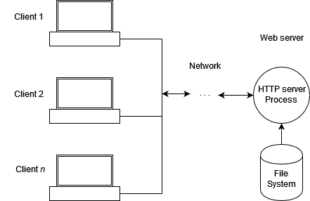

Esta página servirá como recurso servido por el servidor HTTP/1.1
Los posibles archivos servidos son:
Los servidores HTTP se pueden ver así:
Para observar el funcionamiento del archivo app.js, de clic en el botón: